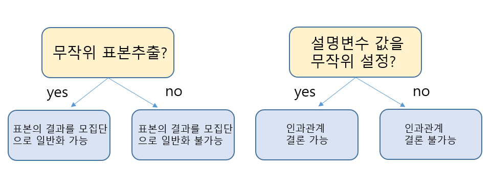

1.3 실험연구와 관측연구
연관과 인과관계
데이터에 기반하여 의사결정을 하는 다음 두가지 상황을 생각하자.
- A: 전원 주택에 사는 사람이 올 겨울 날씨가 작년보다 훨씬 더 춥다고 느꼈다. “이번 겨울에는 난방 가스 요금을 더 많이 준비해야 하나?”라고 생각했다.
- B: 고속도로 관리자가 도로에 염화칼슘을 많이 뿌린 날에 교통사고가 많은 데이터를 보았다. “교통사고를 줄이려면 염화칼슘을 더 적게 뿌려야 하는 것인가?”라는 의문이 들었다.
두 질문 모두 변수 두 개에 관한 것이다. 첫 번째는 바깥 기온이 내려가면 난방비가 많이 든다는 것이고 두 번째는 염화칼슘을 많이 뿌린 날에 교통사고가 많다는 것이다. 이와 같이 한 변숫값의 변화와 다른 변숫값의 변화가 관계 있을 때 두 변수 사이에 연관(association)이 있다고 말한다.
두 사람 중에 누구의 생각이 더 현명하다고 생각하는가? 바깥 기온이 낮아지면 실내 기온도 낮아진다. 실내 기온을 올리려면 난방에 필요한 가스를 더 많이 소비할 수밖에 없다. 하지만 눈 또는 얼음으로 덮인 도로에 염화칼슘을 뿌리면 교통사고가 줄어들 것이라고 생각하는가? 오히려 염화칼슘을 덜 뿌리면 사고는 더 늘어날 것이다.
두 변수 사이에 연관이 아무리 강하더라도 두 변수 사이에 인과관계가 있다고 말할 수 없다. 한 변숫값의 변화가 다른 변숫값의 변화에 영향을 끼칠 때 두 변수 사이에 인과관계(causation)가 존재한다고 말한다. A에는 인과관계가 존재하지만 B에는 인과관계가 없다.
연관과 인과관계를 구분하는 것은 쉽지 않지만 매우 중요하다. 인과관계에서는 한 변수를 조작하여 다른 변수의 값이 바뀌게 할 수 있다. 예를 들어, 자동차의 엑셀을 밟으면 자동차는 더 빨리 간다. 인과관계가 없는 연관에서는 한 변수의 값을 바꾸더라도 예측할만한 다른 변수의 값 변화를 기대할 수 없다.
인과관계는 종종 특정 방향으로 작용한다. 바깥 기온이 내려가면 가스를 많이 사용하지만 가스를 많이 사용한다고 바깥 기온이 내려가는 것은 아니다. 이 경우에 바깥 기온은 설명변수이고 가스 사용량은 반응변수이다.
예제 1.22. 다음 각 문제에서 두 변수 사이에 연관이 있는지를 조사하고 연관이 있다면 인과관계인지 아닌지 구분하라. 또한 인과관계인 경우에는 설명변수와 반응변수를 찾아보라.
(1) 연구 결과 연습 시험을 치르면 시험 성적이 오른다.
(2) 자동차가 많은 가정은 TV도 많이 소유하는 경향이 있다.
(3) 광고비 지출이 달라도 판매량은 변화가 없다.
(4) 매일 아스피린을 먹으면 심장병 위험을 줄인다.
(5) 큰 저수지에 사는 붕어가 작은 저수지에 사는 붕어보다 큰 경향이 있다.
(6) 큰 저수지에서 붕어를 키우면 더 크게 자랄 것이다.
풀이 (클릭하면 풀이가 보입니다)
(1) 연습 시험을 치르면 성적이 오르므로 인과관계가 있는 연관이다. 설명변수는 연습 시험을 치르냐 아니면 치르지 않냐이고, 반응변수는 시험 성적이다.
(2) 자동차가 많은 가정의 TV도 많아지는 경향이 있으므로 연관이 있다. 하지만 자동차를 산다고 TV가 늘어나거나 TV를 산다고 자동차가 늘어나는 것은 아니므로 인과관계는 없다. 인과관계가 없는 연관이다.
(3) 광고비 지출이 변하더라도 판매량은 변하지 않으므로 연관이 없다.
(4) 매일 아스피린을 먹으면 심장병 위험을 줄일 수 있으므로 인과관계가 있는 연관이다. 설명변수는 아스피린 복용이고 반응변수는 심장병이다.
(5) 큰 붕어는 큰 저수지에 사는 경향이 있다는 뜻이므로 인과관계가 없는 연관이다.
(6) 인과관계가 있는 연관이다. 설명변수는 저수지의 크기이고 반응변수는 붕어의 크기이다.
위 예제에서 (5)와 (6)는 혼동하기 쉽다. (6)에서 붕어를 큰 저수지로 옮기면 붕어가 더 크게 자라므로 인과관계가 있다. 하지만 (5)에서 큰 붕어는 큰 저수지에서 보는 경우가 많다는 뜻이므로 인과관계는 없다. 통계에서 가장 흔히 하는 실수 중의 하나가 연관과 인과관계를 잘못 구분하는 것이다.
연관이 인과관계인가 아닌가에 따라 의사결정이 달라진다. \(1950\)년대 흡연과 폐암은 연관이 있다는 것이 밝혀졌다. 그러나 흡연이 폐암을 일으킨다는 인과관계는 수십 년 동안 논쟁 중에 있었다. 지금은 흡연이 폐암 발생의 원인이라는 인과관계가 밝혀져서 흡연이 많이 줄었다. 그러면 흡연자에게 반드시 폐암이 발생한다는 뜻인가? 아니다. 흡연자의 폐암 발생률이 비흡연자에 비해 \(10\)배에서 \(20\)배 정도 높다는 뜻이다. 휴대폰 사용이 암 발생의 원인인지에 대한 인과적 질문도 아직 논쟁 중에 있다.
확인문제 1. 연관(association)과 인과관계(causation)의 차이로 가장 적절한 설명은?
1 연관이 있으면 항상 인과관계도 존재한다.
2 연관이 있어도 인과관계가 아닐 수 있다.
3 인과관계가 있으면 연관은 존재하지 않는다.
4 두 변수 사이에 연관이 없으면 인과관계도 반드시 없다.
확인문제 2. 다음 중 인과관계가 있는 경우를 고르시오.
1 고속도로에서 염화칼슘을 많이 뿌릴수록 교통사고가 증가한다.
2 자동차를 많이 소유한 가정이 TV도 많이 소유하는 경향이 있다.
3 매일 아스피린을 복용하면 심장병 위험이 감소한다.
4 큰 저수지에 사는 붕어가 작은 저수지에 사는 붕어보다 크다.
확인문제 3. 연관이 있지만 인과관계가 없는 사례로 적절한 것은?
1 학생이 연습 시험을 보면 시험 성적이 오른다.
2 광고비를 증가시켜도 판매량은 변하지 않는다.
3 큰 저수지에 사는 붕어가 작은 저수지에 사는 붕어보다 크다.
4 큰 저수지에서 붕어를 키우면 더 크게 자란다.
중첩 변수
두 변수 사이에 인과관계는 없는데 연관은 왜 있을까? 다음 예제에서 보는 것처럼 제3의 변수가 중간에서 영향을 끼치기 때문이다.
데이터 1.5. 자동차와 기대 수명
다음 표는 미국의 연도별 자동차 등록 대수(단위: 백만)와 태어난 아이의 기대수명이다. 표아래 자동차 등록 대수와 기대수명의 산점도가 그려져 있다. 표와 그래프에서 볼 수 있는 것처럼 두 변수 사이에는 아주 강한 연관이 있다. 자동차 등록이 많아질수록 사람은 더 오래 살 것이라고 기대된다.
자동차 등록 대수와 기대 수명 사이에는 확실하게 연관이 있다. 인과관계가 있는 연관일까? 인과관계가 있다면 어떤 설명이 가능할까? 운전할 자동차가 있으므로 더 오래 살게 되는 것인가? 사람이 더 오래 살게 되므로 자동차를 살 시간이 많다는 것인가? 또 다른 어떤 설명이 가능한가?
설명변수와 반응변수 모두 연관이 있는 제3의 변수를 중첩변수(confounding variable) 또는 잠복변수(lurking variable)라고 한다. 중첩변수로 종종 두 변수 사이의 연관에 대한 다른 설명이 가능하다.
예제 1.23. 위 데이터에서 자동차 등록대수와 기대수명에 대한 연관을 중첩변수로 설명해보라.
풀이 (클릭하면 풀이가 보입니다)
가능한 중첩변수는 연도이다. 시간이 흘러 인구가 늘면 더 많은 자동차가 팔린다. 또한 시간이 흐르면 의료 기술이 발전하여 기대수명이 늘어난다. 두 변수는 서로 직접적인 연관이 없어도 시간이 흐르면 자연히 증가하는 경향이 있다. 연도가 자동차 등록대수와 기대수명 사이의 연관을 설명한다.
자동차 등록대수와 기대수명 사이의 관계와 같은 강한 연관을 볼 때 곧바로 인과관계로 결론을 내고 싶은 유혹에 빠질 수 있다. 성급히 결론을 내지 말고 제3의 중첩변수로 설명이 가능한지 깊이 생각하는 버릇을 길러야 한다.
예제 1.24. \(2008\) 년 LA 타임즈 신문은 심장 발작이 발생하는 경우 카지노보다 병원이 더 위험할 수 있다는 기사를 내보냈다. 이 기사는 심장 발작시 심장 박동을 정상화시키는 의료 장비나 행인이 카지노 같은 공공장소에 많이 있으므로 병원보다 생존 확률이 더 높아진다는 한 의학 잡지에 실린 연구 결과를 소개한 것이다.
(1) 이 연구에서 설명변수와 반응변수는 무엇인가?
(2) 이 연구에서 가능한 중첩변수를 찾아보라.
(3) 당신에게 심장 발작이 발생한다면 카지노와 병원 중에 어디를 가겠는가?
풀이 (클릭하면 풀이가 보입니다)
(1) 심장 발작이 발생한 장소는 설명변수이고 생존 여부는 반응변수이다.
(2) 중첩변수는 심장 발작이 발생할 당시의 환자의 건강이다. 노약자가 병원에 있을 가능성이 높고 심장 발작이 일어나면 생존 가능성이 더 낮다. 반면에 카지노에 있는 사람은 좀더 건강한 경우가 많고 살아날 가능성도 높다. 따라서 환자의 건강이라는 중첩변수로 환자가 있는 장소와 생존할 가능성에 대한 설명이 모두 가능하다.
(3) 심장발작이 일어나면 병원에 가야 한다. 카지노에서 심장 발작의 생존율이 높은 것은 중첩변수로 설명된다. 카지노에 있다고 해서 생존율이 올라가는 것이 아니다. 건강이 같다면 카지노보다 의사가 있는 병원에 있는 사람이 더 안전할 것이다.
언론에서 소개하는 놀랄만하게 그럴듯한 인과관계에 대한 많은 주장이 중첩변수로 쉽게 설명이 가능하다. 중첩변수를 찾아내는 능력은 통계적 소양과 데이터에 기반한 주장을 평가할 때 매우 중요하다.
확인문제 1. 두 변수 사이에 인과관계가 없는 상태에서 연관이 존재할 수 있는 이유는 무엇인가?
1 두 변수 모두 제3의 변수와 연관이 있을 수 있기 때문이다.
2 두 변수 사이의 관계는 항상 인과관계를 의미하기 때문이다.
3 연관이 있는 변수는 항상 서로 직접적인 영향을 미친다.
4 데이터 분석을 통해서는 인과관계를 완벽히 증명할 수 없다.
확인문제 2. 다음 중 중첩변수(confounding variable)가 개입된 사례로 가장 적절한 것은?
1 자동차 등록대수가 증가할수록 기대수명이 증가한다.
2 매일 운동을 하면 체력이 좋아진다.
3 학생이 연습시험을 보면 시험 성적이 향상된다.
4 붕어가 큰 저수지에서 더 크게 자란다.
확인문제 3. 심장 발작 환자의 생존율이 카지노에서 더 높다는 연구 결과에서 중첩변수로 가장 적절한 것은?
1 카지노에 비치된 응급 장비의 수
2 심장 발작 환자의 건강 상태
3 병원의 응급 치료 속도
4 심장 발작이 발생한 시간대
관측연구와 실험연구
연관을 보고 인과관계가 존재한다고 언제 말할 수 있을까? 그것은 데이터 수집 방식에 따라 다르다. 설명변수가 반응변수에 어떤 영향을 주는지 알고 싶다면 어떤 중첩변수도 반응변수에 영향을 끼치지 못하게 설명변수의 값을 조정할 수 있어야 한다.
앞에서 자동차 등록대수와 기대수명, 심장병 발작 연구에서는 단순히 데이터를 수집했다. 설명변수에 대한 어떤 조작도 없이 수집한 데이터에 기반한 연구를 관측연구(observational study)라고 말한다. 연구자가 개입하거나 실험을 수행하지 않고, 자연적으로 발생하는 현상을 관찰하고 데이터를 수집하여 분석하는 연구 방법이다. 관측 데이터에서 발견한 연관이 다른 중첩변수 때문에 발생하지 않았다고 결코 확신할 수 없다. 따라서 연관이 인과관계의 증거는 될 수 없다.
대안은 반응변수의 값이 어떻게 달라지는지 보기 위하여 설명변수의 값을 의도적으로 조절하는 것이다. 이렇게 데이터를 수집하는 방식을 통계실험(statistical experiment)이라고 부른다. 잘 설계된 실험에서 연관이 발견되면 인과관계가 존재한다고 말할 수 있다. 설명변수의 값을 조절하여 어떤 중첩변수의 영향도 피했기 때문이다.
예제 1.25. 다음 두 연구는 사과 농장에서 사과 생산에 대한 비료 효과를 연구하기 위한 설계이다. 실험연구인지 관측연구인지 구분하라.
(1) 연구자는 몇몇 사과 농장을 방문하여 사용한 비료 양과 사과 생산량을 조사한다.
(2) 연구자는 몇몇 사과 농장에 각 농장마다 사용할 비료량을 정해주고 사과 생산량을 조사한다.
풀이 (클릭하면 풀이가 보입니다)
(1) 이것은 관측연구이다. 데이터만 기록하고 어떤 변수도 조작하기 않았기 때문이다. 사용한 비료 양과 사과 생산량을 설명할 수 있는 수많은 중첩변수 중의 하나의 예로 토양의 질을 생각할 수 있다.
(2) 이것은 실험연구이다. 각 농장마다 사용할 비료 양을 정해주기 때문이다. 연구자는 사과 생산에 대한 비료의 효과를 알기 위하여 비료의 양을 적극적으로 조절한다.
예제 1.26. \(2011\) 년 미국 NBA 농구 결승에서 달라스는 마이애미를 이기고 우승을 차지했다. NBC 스포츠 기사는 “마이애미의 문제는 하이파이브를 충분히 하지 않은 것이다”라는 한 연구 결과를 인용했다. 이 연구 결과는 하이파이브를 많이 한 팀이 시즌 초반에 좋은 성적을 거두었다는 것이다. 이 연구는 실험연구인가 아니면 관측연구인가? 이 연구 결과로 하이파이브를 많이 하면 농구팀의 성적이 좋아진다고 말할 수 있는가?
풀이 (클릭하면 풀이가 보입니다)
이 연구는 관측연구이다. 하이파이브에 대한 어떤 조작도 연구자는 하지 않았기 때문이다. 성적이 좋아진다는 것은 인관관계를 의미한다. 하지만 관측연구이기 때문에 중첩변수가 존재할 가능성이 있어서 인과관계는 성립될 수 없다. 이 연구는 하이파이브를 많이 한다고 농구팀의 성적이 좋아진다는 주장에 대한 어떤 증거도 제시하지 못한다.
중첩변수로 생각할 수 있는 것은 팀이 얼마나 사이 좋게 지내는가이다. 팀 멤버들이 사이가 좋으면 하이파이브도 많이 하고 성적도 좋은 경향이 있다.
확인문제 1. 관측연구(observational study)와 실험연구(experimental study)의 차이로 가장 적절한 것은?
1 관측연구는 설명변수를 연구자가 조작할 수 있지만, 실험연구는 그렇지 않다.
2 실험연구는 설명변수의 값을 조절하여 중첩변수의 영향을 최소화할 수 있다.
3 관측연구는 항상 인과관계를 증명할 수 있다.
4 실험연구에서는 설명변수를 조작하지 않고 자연스럽게 발생하는 현상을 관찰한다.
확인문제 2. 다음 중 실험연구에 해당하는 경우는?
1 연구자가 다양한 학교를 방문하여 학생들의 공부 시간과 성적을 조사한다.
2 연구자가 마라톤 선수들의 식단과 경기 기록을 비교하여 상관관계를 분석한다.
3 연구자가 실험 참가자들을 두 그룹으로 나누어 한 그룹은 특정 비타민을 복용하게 하고, 다른 그룹은 복용하지 않도록 한 후 건강 상태를 비교한다.
4 연구자가 여러 병원을 방문하여 의사와 간호사의 근무 시간이 환자의 회복 속도에 미치는 영향을 조사한다.
확인문제 3. NBA 팀의 하이파이브 횟수와 팀 성적 사이의 연관성을 연구한 연구가 인과관계를 증명하지 못하는 이유는?
1 연구자가 하이파이브 횟수를 조절하지 않았기 때문이다.
2 하이파이브를 많이 한 팀이 무조건 우승하기 때문이다.
3 연구가 충분한 데이터를 사용하지 않았기 때문이다.
4 하이파이브 횟수는 농구 경기와 전혀 상관이 없기 때문이다.
무작위 실험
실험에서 연구자는 설명변수의 값을 조절하여 중첩변수를 피하고 인과관계를 찾아낼 수 있다. 그러면 어떻게 해야 모든 가능 중첩변수에서 벗어날 수 있을까? 대답은 놀랍도록 간단한데 무작위 실험(randomized experiment)이다. 표집편향을 피하기 위하여 무작위 표집을 한 것처럼 중첩변수의 문제를 해결하기 위해서도 무작위를 하면 된다.
앞에서 무작위는 “마음대로” 또는 “되는대로”라는 뜻이 아니라고 말했다. 동전던지기나 카드 뽑기와 같은 무작위 도구를 사용하여 설명변수의 값을 설정한다. 이렇게 하면 설명변수의 값이 우연히 결정되므로 중첩변수의 영향에서 벗어날 수 있다.
예제 1.27. C 교수는 수강생이 \(50\)명인 기말 시험에서 A, B 종류의 시험지를 만들고 난이도가 비슷한지 알고 싶었다. 시험 날 일찍 온 학생 \(25\)명에게는 A 시험지를 주고 나머지 학생에게는 B 시험지를 주었다.
(1) 설명변수와 반응변수는 각각 무엇인가?
(2) 이것은 무작위 실험인가? 중첩변수가 있다면 무엇인가?
풀이 (클릭하면 풀이가 보입니다)
(1) 설명변수는 시험지 종류이고 반응변수는 시험 성적이다.
(2) 무작위 실험이 아니다. 학생에게 주어진 시험지는 강의실에 온 순서로 나누어졌기 때문에 무작위가 아니다. 일찍 온 학생은 시험 준비를 더 많이 한 학생일 수도 있다. 중첩변수는 도착 시간이다.
예제 1.28. 다음 해 C 교수는 무작위 실험을 하기로 결정했다. 학생의 이름을 번호가 적힌 작은 카드에 모두 적고 잘 섞은 후에 두 그룹으로 나누었다. 시험 날 한 그룹의 학생에게는 A 시험지, 다른 그룹의 학생에게는 B 시험지를 주었다. 시험이 끝난 후에 채점을 해보니 B 시험지로 시험을 본 학생들의 점수가 A 시험지보다 더 높았다. 시험지 B가 더 쉬웠다고 결론내릴 수 있을까?
풀이 (클릭하면 풀이가 보입니다)
시험지 B가 더 쉬웠다고 결론내릴 수 있다. 학생이 어느 시험지로 시험을 보느냐는 무작위로 결정되었기 때문에 중첩변수가 있다고 의심할 이유는 없기 때문이다.
앞 절에서 중요한 아이디어는 모집단에서 무작위로 표본을 뽑았을 때 표본 결과를 모집단으로 일반화할 수 있다는 것이다. 이 절에서 중요한 아이디어는 설명변수의 값이 무작위로 실험 개체에 설정될 때 인과관계가 성립될 수 있다는 것이다.
무작위는 양쪽에서 기본적으로 중요하지만, 무작위 형태가 다르다. 첫 번째 경우에서 우리는 연구 대상이 어떤 개체가 될지 무작위로 결정한다. 두 번째 경우에서는 실험 개체는 이미 결정되어 있지만 각 개체에 설명변수의 어떤 값을 설정할 지를 무작위로 결정한다.
무작위가 제대로 이루어지지 않았을 때 결론의 타입도 다르다. 표본추출을 무작위로 못했을 때의 결론은 모집단으로 일반화 할 수 없다는 것이다. 설명변수의 값을 무작위로 설정하지 못했을 때의 결론은 인과관계를 주장할 수 없다는 것이다.

문제 1.3. 한 인터넷 회사가 두 개의 온라인 광고 캠페인 중 어떤 것이 광고를 클릭하여 그들의 사이트를 방문하게 하는데 더 효과적인지 알아볼려고 한다. 각 캠페인에 \(500\)개의 광고를 게재할 예산이 있다고 가정하고 적절한 실험 방법을 설계하라.
풀이:
\(1000\)개의 광고에 \(1\)부터 \(1,000\)까지 번호를 붙인 후 난수 \(500\)개를 뽑아서 두 그룹으로 나누어 광고 캠페인을 각각 적용한다.
확인문제 1. 무작위 실험(randomized experiment)의 주요 목적은 무엇인가?
1 연구자가 원하는 결과를 얻기 위해 변수를 조정하는 것
2 실험 대상자를 무작위로 선택하여 모집단을 대표하게 하는 것
3 설명변수의 값을 무작위로 설정하여 중첩변수의 영향을 최소화하는 것
4 실험 데이터를 수집하는 동안 가능한 많은 변수를 조작하는 것
확인문제 2. 다음 중 무작위 실험이 아닌 경우는?
1 연구자가 참가자들의 이름을 종이에 적고 무작위로 두 그룹으로 나눈 후, 한 그룹은 비타민을 복용하고 다른 그룹은 위약을 복용하도록 한다.
2 한 대학에서 두 개의 시험지를 제작하고, 시험 당일 일찍 도착한 학생들에게 A 시험지를 주고, 나머지 학생들에게 B 시험지를 준다.
3 연구자가 실험 참가자들에게 동전 던지기를 시킨 후, 앞면이 나온 사람은 카페인을 섭취하도록 하고 뒷면이 나온 사람은 카페인을 섭취하지 않도록 한다.
4 임의로 학생 \(100\)명을 선정하고, 절반은 새로운 학습법을 적용한 수업을 듣게 하고 나머지는 기존 수업을 듣게 한 후 성적을 비교한다.
확인문제 3. 무작위 실험이 인과관계를 증명할 수 있는 이유로 적절한 것은?
1 연구자가 원하는 데이터만 수집할 수 있기 때문이다.
2 실험 참가자가 자신의 실험 그룹을 선택할 수 있기 때문이다.
3 설명변수의 값을 무작위로 설정하여 중첩변수의 영향을 통제하기 때문이다.
4 연구자가 실험 조건을 임의로 변경할 수 있기 때문이다.
데이터 1.6. 내과의사의 건강 연구
정기적으로 아스피린을 복용하는 사람을 본 적이 있는가? 본 적이 있다면 \(1980\)년대에 실시된 무작위 실험 연구의 결과 때문이다. 이 연구는 \(22,071\)명의 내과의사를 무작위 로 두 집단으로 나누었다. \(5\)년동안 매일 한 집단에는 아스피린을 복용하게 하고 나머지 그룹은 가짜 약을 복용하게 하였다. 아스피린을 매일 복용한 그룹의 심장마비 발생률이 가짜 약을 먹은 그룹보다 \(44\%\) 적게 나왔다.
이 연구가 무작위 실험인 이유는 연구자는 내과의사가 어떤 약을 먹을 지를 무작위로 결정했기 때문이다. 내과의사는 선택의 여지가 없었고 어떤 약이 가짜인지도 몰랐다. 내과의사는 무작위로 두 그룹으로 나뉘어졌기 때문에 그룹간의 차이는 아스피린 뿐이었다. 따라서 심장마비 발생률이 차이가 난 이유는 아스피린 뿐이다. 이 연구로부터 매일 아스피린을 복용하면 심장마비 발생의 위험을 줄일 수 있다고 결론 내릴 수 있다.
실험 설계의 많은 아이디어가 의학 연구나 농업 실험에서 나왔다. 이러한 이유로 연구자가 제어하는 설명변수의 값을 처리(treatment)라고 부른다. 위에서 처리는 진짜 아스피린과 가짜 아스피린이다.
예제 1.29. 대부분 모든 체육 선수는 시합 전에 준비운동을 한다. 하지만 준비운동을 얼마큼 하는 것이 최적인지 알려지지 않았다. 사이클 선수는 매우 강한 준비운동을 하는데, \(2011\)년 한 연구팀이 짧고 약한 준비운동이 더 좋은 지를 연구하였다. \(10\)명의 사이클 선수에게 전통적인 강한 준비운동과 짧지만 약한 준비운동을 시켰다. 어떤 준비운동을 먼저 할지는 무작위로 결정하였다. 각 준비운동을 마친 후에 기록을 측정하였다. 짧은 준비운동을 한 경우에 기록이 더 좋게 나왔다.
(1) 처리는 무엇인가?
(2) 이 연구의 결론은 무엇인가?
풀이 (클릭하면 풀이가 보입니다)
(1) 비교할 처리는 두 가지이다. 하나는 전통적으로 강한 준비운동이고 다른 하나는 짧지만 약한 준비운동이다.
(2) 준비운동의 순서가 무작위이므로 인과관계 결론이 가능하다. 준비운동을 짧게 하는 것이 기록 향상에 도움이 된다.
예제 1.28과 데이터 1.6에서는 각 개체에 어떤 처리를 할 지 무작위로 결정하였다. 예제 1.29는 처리의 순서를 무작위로 결정하였다. 처리를 무작위로 결정하는 실험을 무작위 비교 실험(randomized comparative experiment)이라고 한다. 순서를 무작위로 결정하는 실험은 대응짝 실험(matched pairs experiment)이라고 한다. 이들은 무작위 기법을 실험에 활용한 수많은 방법 중에서 두 가지일 뿐이다.
확인문제 1. 무작위 비교 실험(randomized comparative experiment)의 특징으로 적절한 것은?
1 연구자가 개체를 직접 선택하여 실험 그룹을 나눈다.
2 개체를 두 개 이상의 처리(treatment) 그룹으로 무작위로 배정한다.
3 실험에서 개체의 순서를 무작위로 결정한다.
4 연구자가 실험 그룹과 대조군을 설정하지 않고 데이터를 수집한다.
확인문제 2. 다음 중 대응짝 실험(matched pairs experiment)에 해당하는 경우는?
1 연구자가 참가자들을 두 그룹으로 나누어 한 그룹은 비타민을 섭취하게 하고, 다른 그룹은 섭취하지 않도록 한 후 건강 변화를 관찰한다.
2 한 농장에서 두 종류의 비료를 사용하여 각 비료의 효과를 비교하는 연구를 진행한다.
3 \(10\)명의 피험자에게 서로 다른 학습법을 적용한 후 성취도를 평가하고, 이후 같은 피험자가 반대 학습법을 적용한 후 다시 평가한다.
4 연구자가 여러 기업에서 다양한 급여 수준과 직원 만족도를 조사하여 관계를 분석한다.
확인문제 3. 내과의사의 건강 연구에서 아스피린과 가짜 약을 비교하는 실험이 인과관계를 증명할 수 있었던 이유로 적절한 것은?
1 연구자가 실험에 참여한 내과의사들에게 자유롭게 약을 선택하도록 했다.
2 실험 참가자들은 무작위로 두 그룹으로 나뉘어졌으며, 어떤 약을 복용하는지 몰랐다.
3 연구자들이 가짜 약을 복용한 참가자의 식단을 조정했기 때문이다.
4 심장마비 발생률이 자연스럽게 줄어드는 시기에 실험이 진행되었기 때문이다.
예제 1.30. 자주 사용하는 손의 힘이 다른 손보다 더 셀까? \(30\)명의 오른손 잡이를 대상으로 오른손이 왼손보다 힘이 더 센지를 알아보는 실험을 하려고 한다.
(1) 무작위 비교 실험 설계를 기술하라.
(2) 대응짝 실험 설계를 기술하라.
(3) 이 경우에 어떤 실험 설계가 더 타당하다고 생각하는가?
풀이 (클릭하면 풀이가 보입니다)
(1) 무작위 비교 실험을 하려면 \(30\)명을 무작위로 두 그룹으로 나눈다. 한 그룹에서는 오른손의 힘을 측정하고 다른 그룹에서는 왼손의 힘을 측정하여 비교한다.
(2) 대응짝 실험에서는 \(30\)명 모두 양손의 힘을 측정한다. 오른손과 왼손이 있으므로 데이터는 짝으로 이루어진다. 각 참가자의 어떤 손을 먼저 측정할 지는 무작위로 결정한다.
(3) 대응짝 실험이 더 타당하다. 왜냐하면 사람마다 손의 힘은 크게 다르므로 다른 사람과 손의 힘을 비교하기 보다는 자신의 오른손과 왼손을 비교하는 것이 더 타당하다.
대조 그룹, 플라시보, 눈가림
앞에서 다룬 내과의사 건강 연구는 여러가지 측면에서 매우 잘 설계된 실험이다. 아스피린을 먹지 않은 참가자는 대조 그룹(control group)이다. 반응변수에 영향을 끼칠 수 있는 어떤 것도 대조 그룹에는 하지 않는다. 대조 그룹은 연구의 관심인 처리를 실제로 받은 처리 그룹(treatment group)과 비교하기 위한 것이다. 모든 실험에서 대조 그룹이 필요한 것은 아니다. 예제 1.28에서 두 종류의 시험지의 난이도를 비교할 때 대조 그룹은 없다.
사람은 효과적인 처리를 받고 있다고 믿으면, 처리 효과가 실제로 없더라도 효과를 경험하기도 한다. 이러한 현상을 플라시보 효과(placebo effect)라고 한다. 플라시보 효과에 대한 많은 연구는 이 효과가 매우 강력할 수 있음을 입증했다. 플라시보는 가짜 약이나 처리이며, 실험에서 플라시보 효과를 관리하기 위하여 자주 사용된다. 내과의사 건강 연구에서 대조 그룹에 주어진 가짜 아스피린이 플라시보의 예이다.
실험 참가자가 자신이 받은 처리가 플라시보임을 안다면 플라시보 효과가 나타나지 않는다. 눈가림(blinding)이 그래서 매우 중요하다. 실험 참가자가 어느 그룹에 속하는 지를 모를 때 단일 눈가림(single blinding)이라고 한다. 실험 참가자는 자신이 어느 그룹에 속하는지 모르고, 실험 관계자도 참가자가 어느 그룹에 속하는 지를 모를 때 이중 눈가림(double blinding)이라고 한다. 내과의사 건강 연구는 이중 눈가림이다. 실험 참가자는 자신이 먹는 아스피린이 진짜인지 가짜인지 몰랐고 심장마비를 진단하는 의사도 환자가 어느 그룹에 속하는지 몰랐다.
확인문제 1. 무작위 비교 실험(randomized comparative experiment)의 특징으로 적절한 것은?
1 실험 참가자는 자신이 받은 처리를 알고 있어야 한다.
2 개체를 무작위로 두 개 이상의 처리 그룹으로 나눈다.
3 모든 개체가 동일한 처리를 받아야 한다.
4 연구자가 개체를 직접 선택하여 실험 그룹을 나눈다.
확인문제 2. 다음 중 대응짝 실험(matched pairs experiment)에 해당하는 경우는?
1 연구자가 참가자들을 두 그룹으로 나누어 한 그룹은 비타민을 섭취하게 하고, 다른 그룹은 섭취하지 않도록 한 후 건강 변화를 관찰한다.
2 \(30\)명의 오른손잡이를 대상으로 오른손과 왼손의 힘을 각각 측정하여 비교한다.
3 여러 농장에서 두 종류의 비료를 사용하여 생산량을 비교하는 연구를 진행한다.
4 연구자가 여러 기업에서 다양한 급여 수준과 직원 만족도를 조사하여 관계를 분석한다.
확인문제 3. 내과의사의 건강 연구에서 이중 눈가림(double blinding) 기법을 사용한 이유로 적절한 것은?
1 연구자가 실험에 참여한 내과의사들에게 자유롭게 약을 선택하도록 하기 위해서이다.
2 실험 참가자가 자신이 받은 처리를 알면 연구 결과에 영향을 미칠 수 있기 때문이다.
3 실험에서 아스피린과 플라시보의 차이를 극대화하기 위해서이다.
4 연구자가 실험 결과를 조작하지 못하도록 하기 위해서이다.
데이터 1.7. 가짜 무릎 수술
무릎 관절염으로 고생하는 환자에게 관절경 수술은 치료 방법 중의 하나이다. \(1990\)년대 중반에 한 연구팀은 무릎 관절염을 앓고 있는 \(10\)명의 남자 환자를 대상으로 관절경 수술의 효과를 연구하였다. \(10\)명의 환자는 하나만 제외하면 모두 똑같은 치료를 받았다. 일부 환자만 실제로 수술을 했다.
각 환자는 수술실에 들어와 마취를 받는다. 의사에게 전달된 작은 쪽지에는 실제 수술을 하는지 아니면 수술은 하지 않지만, 수술을 받은 것처럼 무릎에 작은 상처를 내고 봉합하는지 적혀 있다. 수술이 끝난 후에 모든 환자는 같은 치료를 받았다. 환자가 어떤 무릎 수술을 받았는지 모르는 의사가 환자의 무릎이 얼마나 호전되었는지 검사하였다. 결과는 놀랍게도 가짜 무릎 수술의 효과와 진짜 관절경 수술의 효과는 별 차이가 없었다!
예제 1.31. 데이터 1.7에서 무작위가 사용되었는가? 플라시보는 있는가? 이중 눈가림 연구인가? 의사는 실제 수술을 하지 않으면서 무릎에 왜 작은 상처를 내고 봉합했는가?
풀이 (클릭하면 풀이가 보입니다)
환자를 실제 수술 그룹에 배치할지 아니면 가짜 수술 그룹에 배치할 지를 무작위로 결정했다. 플라시보는 가짜 수술이다. 플라시보 수술은 가능한한 진짜 수술과 비슷해야 하므로 무릎에 같은 수술 흔적을 남긴다. 환자나 의사나 무릎의 상처를 보고는 어떤 수술을 받았는지 모른다. 따라서 이 연구는 이중 눈가림 이다.
무릎 관절경 수술의 효과를 검증하는데 단지 \(10\)명의 환자 데이터로 충분한가라는 의구심을 가질 수 있다. 의구심을 갖는 것이 당연하다. 일반적으로 똑같은 실험을 여러번 반복하여 효과를 검증한다. 대규모 실험을 하기 전의 초기 연구는 흔히 규모가 작다. \(2002\)년 \(180\)명의 환자를 대상으로 플라시보 무릎 수술의 효과에 대한 연구 결과는 초기 연구와 유사했다.
예제 1.32. 카페인 주사를 쥐에게 놓으면 미로를 좀더 빠르게 배우게 될까? 이 질문에 답하기 위한 실험을 설계하라. 좋은 실험이 되는 기준을 잘 활용하라.
풀이 (클릭하면 풀이가 보입니다)
실험에 사용될 쥐를 무작위로 두 그룹으로 나눈다. 한 그룹에는 카페인 주사를 놓고 다른 그룹에는 플라시보 용액이 든 주사를 놓는다. 쥐를 미로에 넣고 기록을 측정한다. 단, 쥐들에게 어떤 그룹에 속해 있는지 절대로 말하지 말라! 실험 쥐와 접촉하는 모든 사람(주사를 놓는 사람, 기록을 재는 사람 등)은 각 쥐가 어느 그룹에 속해 있는지 몰라야 한다. 이렇게 하면 이중 눈가림이 된다. 단지 데이터를 분석하는 사람만이 쥐가 속해 있는 그룹을 알게 된다.
무작위 실험의 현실
실험을 설계할 때 항상 무작위를 활용해야 한다. 눈가림이나 플라시보 처리도 가능하다면 설계에 반영되어야 한다. 하지만 실험에 활용을 못하게 하는 윤리적 제약이 종종 발생한다. 예를 들어, 휴대폰이 암을 일으키는지 또는 오염된 공기가 건강에 해로운 지를 연구하는 실험을 설계한다고 생각하자. 휴대폰이 암을 일으키는지 알아보려고 실험 참가자에게 휴대폰을 오랜 시간 머리맡에 두라고 하는 것은 적절하지 않다. 유사하게 공기가 오염된 지역에 가서 살라고 요구하는 것도 적절하지 않다. 이와 같은 상황에서 관측연구는 연관이 존재하는 지를 결정하는데 도움을 준다.
확인문제 1. 무릎 관절경 수술 연구에서 사용된 실험 기법에 대한 설명으로 적절한 것은?
1 환자들은 자신이 어떤 처치를 받았는지 알고 있었다.
2 실험에서 무작위 할당이 이루어지지 않았다.
3 연구자는 진짜 수술과 가짜 수술을 무작위로 배정하여 중첩변수의 영향을 최소화했다.
4 실험의 결과는 진짜 수술을 받은 환자가 유의미하게 더 나은 회복을 보였음을 보여주었다.
확인문제 2. 카페인 주사 실험에서 실험의 신뢰도를 높이기 위해 도입된 방법이 아닌 것은?
1 실험 대상인 쥐를 무작위로 두 그룹으로 나누었다.
2 한 그룹에는 카페인 주사를, 다른 그룹에는 플라시보 주사를 놓았다.
3 실험과정에서 쥐들에게 자신이 어느 그룹인지 알려주었다.
4 실험에 참여하는 연구자들도 쥐가 어느 그룹에 속하는지 모르게 했다.
확인문제 3. 무작위 실험을 수행할 때 윤리적 문제로 인해 실험을 진행하기 어려운 경우에 대한 설명으로 적절한 것은?
1 모든 연구에서 실험보다 관측연구가 더 신뢰할 수 있는 결과를 제공한다.
2 무작위 실험이 불가능한 경우에도 반드시 실험을 수행해야 한다.
3 윤리적 제약이 있는 경우 관측연구를 수행하여 연관성을 찾을 수 있다.
4 윤리적 문제가 발생하면 연구를 완전히 중단해야 한다.
학습 내용 정리
다음 사항을 이해하거나 해결하는 능력이 있어야 한다.
- 모든 연관이 인과관계를 의미하는 것은 아니다.
- 잠재적인 중첩변수가 연구에 존재하는지 찾을 수 있다.
- 관측연구와 무작위 실험 연구를 구분할 수 있다.
- 오직 무작위 실험만이 인과관계를 주장할 수 있다.
- 실험에서 눈가림과 플라시보를 어떻게 또 왜 사용하는 지를 설명할 수 있다.
- 무작위 비교실험과 대응짝 실험의 차이를 안다.
- 무작위 실험을 설계하고 수행할 수 있다.
연관
변수 하나의 값이 다른 변수의 값과 관계가 있는 경향이 있을 때 두 변수 사이에 연관(association)이 존재한다고 말한다.
인과관계
한 변수의 값의 변화가 다른 변수의 값 변화에 영향을 끼치면 두 변수는 인과관계(causation)를 가진다고 말한다.
중첩변수
설명변수와 반응변수 모두와 연관이 있는 제3의 변수를 중첩변수(confounding variable)라고 한다. 중첩변수로 두 변수의 연관을 그럴듯하게 설명할 수 있는 경우가 종종 있다.
관측연구와 실험
실험(experiment)에서 연구자는 설명변수의 값을 적극적으로 조절한다.
관측연구(observational study)에서 연구자는 있는 그대로 데이터를 관측만 할뿐이지 어떤 변수의 값도 조작하지 않는다.
인과관계 주의
관측연구에서 중첩변수를 피하기 어렵다. 이런 이유로 인과성(causality)을 주장하는데 관측연구는 사용될 수 없다.
무작위 실험
무작위 실험에서는 실험 개체의 설명변수 값을 무작위로 결정한다. 무작위 실험에서 연관이 발견되면 설명변수와 반응변수 사이에 인과관계가 존재한다고 주장할 수 있다.
두 종류의 무작위 실험
무작위 비교실험(randomized comparative experiment)에서는 실험 개체를 처리 그룹에 무작위로 배치하고 반응변수 결과를 비교한다.
대응짝 실험(matched pair experiment)에서 각 실험 개체는 처리 순서를 무작위로 결정한다. 두 처리간에 반응변수의 차이를 분석한다.
확인문제 1. 다음 중 변수 간의 연관이 반드시 인과관계를 의미하지 않는 이유로 적절한 것은?
1 연관이 있다는 것은 하나의 변수가 다른 변수의 변화를 유발한다는 의미이다.
2 연관이 강하면 반드시 인과관계가 성립한다.
3 중첩변수가 존재할 가능성이 있기 때문이다.
4 무작위 실험 없이도 인과관계를 주장할 수 있다.
확인문제 2. 관측연구와 실험연구의 차이점에 대한 설명으로 올바른 것은?
1 관측연구에서는 설명변수의 값을 연구자가 조작할 수 있다.
2 실험연구에서는 설명변수의 값을 적극적으로 조절한다.
3 관측연구는 무작위 실험보다 인과관계를 밝히는 데 더 효과적이다.
4 실험연구에서는 중첩변수를 피할 수 없지만, 관측연구에서는 이를 조절할 수 있다.
확인문제 3. 다음 중 실험에서 무작위 할당을 사용하는 가장 중요한 이유는?
1 실험을 더 빠르게 진행할 수 있기 때문이다.
2 연구자가 원하는 결과를 얻을 가능성을 높이기 위해서이다.
3 실험 참가자들이 처치를 고르게 받을 수 있도록 하기 위해서이다.
4 중첩변수의 영향을 최소화하여 인과관계를 올바르게 분석하기 위해서이다.
확인문제 4. 다음 중 무작위 비교 실험과 대응짝 실험의 차이에 대한 설명으로 올바른 것은?
1 무작위 비교 실험에서는 실험 개체를 무작위로 나누고, 대응짝 실험에서는 같은 개체 내에서 비교한다.
2 대응짝 실험은 두 개의 독립된 그룹을 비교하는 실험 방법이다.
3 무작위 비교 실험에서는 처리를 무작위로 할당하지 않는다.
4 대응짝 실험에서는 무작위 할당을 하지 않기 때문에 중첩변수의 영향을 받지 않는다.
과제 1.7. 아래 각각의 주장이 현실에서 사실인지 아닌지는 판단하지 말고 다음 중 어떤 것에 해당하는지 구분하라.
(1) 매일 운동하면 정신적 능력이 향상된다.
1 연관
2 인과관계
3 연관도 인과관계도 아님
(2) 대학생인 경우, 사회 관계망 웹 사이트에서 친구의 수와 대학의 크기는 관계가 없다.
1 연관
2 인과관계
3 연관도 인과관계도 아님
(3) 휴대폰 전자파는 꿀벌에게 치명적이다.
1 연관
2 인과관계
3 연관도 인과관계도 아님
(4) 부유한 사람이 다른 사람보다 거짓말하고 속이는 경우가 많다.
1 연관
2 인과관계
3 연관도 인과관계도 아님
(5) 고양이를 키우는 사람이 개를 키우는 사람보다 학력이 높은 경우가 많다.
1 연관
2 인과관계
3 연관도 인과관계도 아님
(6) 체중을 줄이길 원하는가? 섬유질 음식을 더 많이 섭취하라.
1 연관
2 인과관계
3 연관도 인과관계도 아님
과제 1.8. 다음 각 연구가 관측연구이면 1, 실험연구이면 2로 표기하라.
(1) 현미가 신진대사에 영향을 끼치는지 알아보기 위하여 무작위 표본을 뽑아 현미 섭취 여부와 신진대사량을 측정한다.
1 관측연구
2 실험연구
(2) 상점에 음악을 틀면 소비자가 더 많이 소비하는지 알아보기 위하여 무작위로 몇몇 상점은 음악을 틀게 하고 다른 몇몇 상점은 음악을 틀지 않게 한 다음에 고객이 소비한 평균 금액을 비교한다.
1 관측연구
2 실험연구
(3) 나무를 심으면 공기 오염이 감소하는지 알아보기 위하여 공기 질이 비슷한 시내의 몇 구역을 표본으로 뽑는다. 표본의 \(1/2\)을 무작위로 선택하여 나무를 심고 시간이 흐른 뒤 공기 오염 수준을 측정한다.
1 관측연구
2 실험연구
(4) 양식 연어는 산성인 물에서 자랄 때 오메가3 함유량이 더 높은가를 알아보기 위하여 여러 양식장의 물의 산성도와 연어의 오메가3 함유량을 조사한다.
1 관측연구
2 실험연구
과제 1.9. 각각의 연관을 설명할 수 있는 중첩변수를 아래에서 고르시오.
(1) 아이스크림 판매량이 증가하면 익사하는 사람 수도 증가한다.
1 성별
2 인구
3 눈
4 온도
5 자동차
6 경제력
(2) 지난 \(100\)년동안 소고기 판매량과 돼지고기 판매량은 밀접한 관련이 있다.
1 성별
2 인구
3 눈
4 온도
5 자동차
6 경제력
(3) 요트를 소유한 사람은 스포츠카를 살 가능성이 높다.
1 성별
2 인구
3 눈
4 온도
5 자동차
6 경제력
(4) 장갑의 판매량이 높을 때 썰매의 판매량이 높아지는 경향이 있다.
1 성별
2 인구
3 눈
4 온도
5 자동차
6 경제력
(5) 풀로 덮인 땅보다 포장도로의 비율이 높은 지역의 공기 오염이 더 심하다.
1 성별
2 인구
3 눈
4 온도
5 자동차
6 경제력
(6) 짧은 머리를 가진 사람의 키가 더 큰 경향이 있다.
1 성별
2 인구
3 눈
4 온도
5 자동차
6 경제력